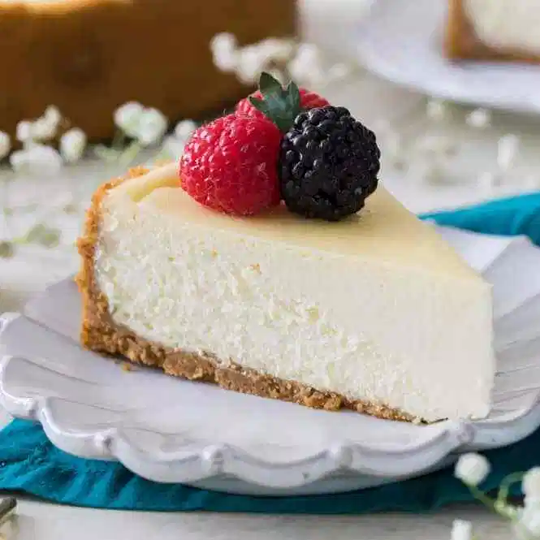

Cheesecake

Description
A light and fluffy masterpiece, this tasty morsel is sure to make even the grumpiest
grinch in your house into a regular ol' Christmas Caroler. Topped with decadent
berries and a leaf, this recipe is sure to be a crowd pleaser.
The crust is both light and crispy all at the same time. The sweetness of the filling and
crust together will make you lose feeling in your toes.
Ingredients
- 1 ¾ cups HONEY MAID Graham Cracker Crumbs
- ⅓ cup butter, melted
- 1 ¼ cups sugar, divided
- 3 (8 ounce) packages PHILADELPHIA Cream Cheese, softened
- 1 cup BREAKSTONE'S or KNUDSEN Sour Cream
- 2 teaspoons vanilla
- 3 medium (blank)s eggs
- 1 (21 ounce) can cherry pie filling
Steps
- Heat oven to 350 degrees F.
- Mix graham crumbs, butter and 1/4 cup sugar; press onto bottom of 9-inch
springform pan.
- Beat cream cheese and remaining sugar in large bowl with mixer until blended.
Add sour cream and vanilla; mix well. Add eggs, 1 at a time, beating on low
speed after each addition just until blended. Pour over crust.
- Bake 1 hour to 1 hour 10 min. or until center is almost set. Run knife around
rim of pan to loosen cake; cool before removing rim. Refrigerate cheesecake 4 hours.
- Top with pie filling before serving.